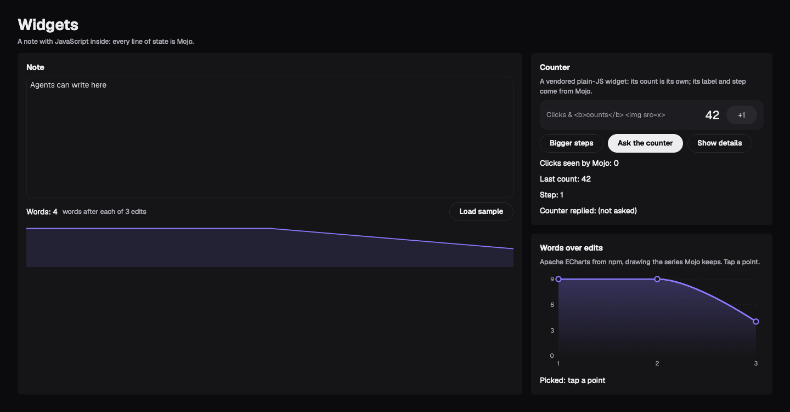
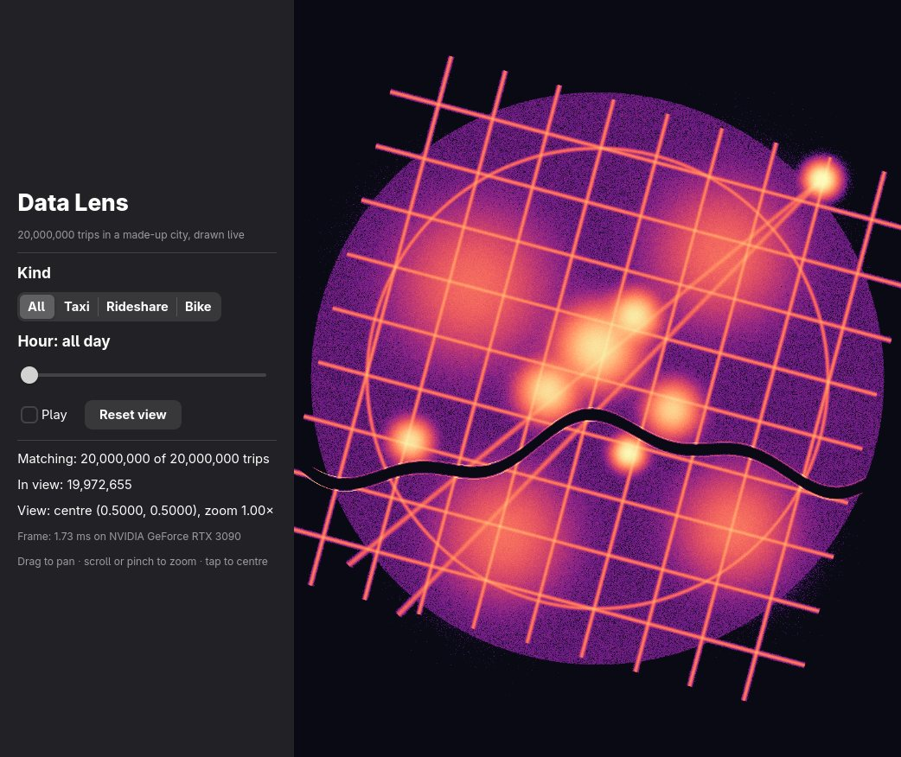
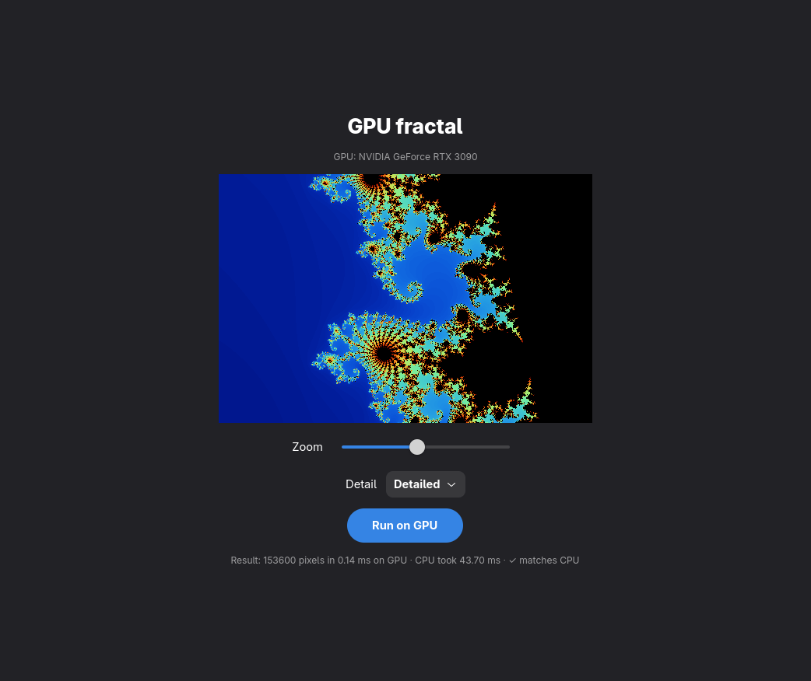

One Mojo app.
Every screen.
A UI framework in Mojo. Two functions, view() and update(), open as a native app on Linux, the web and the Mac (checked on GitHub's virtual Macs), with the GPU kernel in the same file.
one language for the 20M-particle app; JS + WebGPU took 8 files, 5 languages
20M points counted and coloured, one 1080p frame, on the GPU




One app today is three languages
and an agent that guesses.
A codebase per screen
Swift for the Mac, Kotlin for Android, JavaScript for the web. Or one toolkit that imitates them all.
Speed means a second language
The UI in one language, the GPU work in CUDA or shaders, joined by hand-packed buffers.
Agents squint
AI agents drive apps through screenshots and pixel coordinates. Slow, and it breaks.
omxcode: one readable language from the button to the GPU kernel, and every app is already a tool server.
An app is a struct: state, update, view.
from mojoui import App, Event, View, VStack, Text, Button, TITLE, CAPTION, PROMINENT
comptime GREET = 1 # a message is just a number
struct Main(App):
var name: String
var clicks: Int
def __init__(out self):
self.name = "Ada"
self.clicks = 0
def update(mut self, event: Event):
if event.message == GREET:
self.clicks += 1
def view(self) -> View:
var greeting = "Tap Greet" if self.clicks == 0 else "Hello, " + self.name + …
return VStack(
Text(greeting, style=TITLE),
Button("Greet", on_tap=GREET, style=PROMINENT),
spacing=20,
)
- update() changes state when an event arrives.
- view() describes the screen from state: a tree of plain values.
- The shape of Elm, SwiftUI and React.
defonly,comptimeconstants, no@value: Mojo 1.1 as it is today.
One language, from the button to the GPU kernel.
Mojo calls C and Objective-C directly, and C calls Mojo, with no binding generator in between.
Each platform draws it with its own controls.
| Host | Drawn with | A button is | Status |
|---|---|---|---|
| Linux | GTK 4 + libadwaita | GtkButton | runs |
| Web | FastHTML server, HTMX patches | <button> | runs |
| Mac | AppKit, arm64 | NSButton | GitHub's Macs |
| Android | Android views over JNI | android.widget.Button | emulator |
| iPhone | UIKit, arm64 | UIButton | builds, signs |
| Agent | MCP over stdio | a tool | runs |
No web view on the desktop. On the web, HTML is the native control.
The same widgets app, three platforms.
Linux · GTK 4
Mac · AppKit (GitHub's macOS runner)
Web · Chromium
Real typing, spell-check and screen readers come from the platform, not from us.
One event in, one patch out.
Native widget
GtkButton · NSButton
Host
C callback into Mojo
update()
clicks += 1
view()
the new tree
diff
old vs new
patch
set one label's text
Messages are numbers
A widget never holds a closure. The host looks the message up in the current screen when the event arrives, so nothing leaks and nothing needs rewiring.
Same path everywhere
GTK, the web, Android and AppKit all call the same update().
Small edits stay small.
at most, built by any edit after omxplorer's sheet opens (10 updates measured, every one partial)
a frame, scrolling a 1M-row grid at 2180×1074: a keyed display list replayed as GPU render nodes, against 14.2 ms for painted pixels
Same shape → patches
New label text, new slider value.
New shape → rebuild, later
At the next idle moment, never inside the widget's own click.
Mojo ↔ C, with nothing in between.
# Mojo exports a C symbol: scalars only, never raises
@export("KGEN_CompilerRT_AlignedFree")
def aligned_free(ptr: Int) abi("C"):
external_call["free", NoneType](ptr)
- Across the line: scalars and
(pointer, length)strings. Never a struct by value. - Exports are
@export+abi("C"), and can't raise. - State C keeps:
alloc(Layout[T].single()), leaked to C as an address, read back as aPointer. - Linking a Mojo shared library needs
-rpath '$ORIGIN'.
One command, every platform.
$ scripts/build.sh hello all == Linux (hello): GTK4 + libadwaita build/hello/linux/hello == Web (hello): Mojo Python module for FastHTML build/hello/web/mojoui_app.so == Mac (hello): AppKit, arm64 macOS 14+ build/hello/mac/HelloMojo.app == iPhone (hello): UIKit, arm64 iOS 17+ build/hello/ios/HelloMojo.ipa $ scripts/build.sh hello android build/hello/android/HelloMojo.apk
Cross-built on Linux
The Mac and iPhone apps are linked and signed here.
Each one native
A GTK binary, a module FastHTML loads, an .app, an .ipa, an APK.
Picky apps say so
A platforms file: the GPU example builds for linux web.
A plain Mojo function becomes a kernel.
def mandelbrot(x: Int, y: Int, w: Int, h: Int, p: Params) -> UInt32:
"""Colour of one pixel. p = (scale, centre x, centre y, max iterations)."""
var cx = p[1] + (Float32(x) - Float32(w) / 2) * p[0] / Float32(h)
var cy = p[2] + (Float32(y) - Float32(h) / 2) * p[0] / Float32(h)
var zx = Float32(0)
var zy = Float32(0)
var i = 0
var limit = Int(p[3])
while i < limit and zx * zx + zy * zy < 4.0:
var t = zx * zx - zy * zy + cx
zy = 2.0 * zx * zy + cy
zx = t
i += 1
…
# in the same struct, on a tap:
var gpu = self.gpu.render[mandelbrot](WIDTH, HEIGHT, self.params())
self.pixels = gpu.pixels.copy()
# mojoui/gpu.mojo launches it, one GPU thread per pixel:
ctx.enqueue_function[_pixels_kernel[f]](…,
grid_dim=(ceildiv(width, 16), ceildiv(height, 16)), block_dim=(16, 16))
- No CUDA, no shader language, no buffer packing.
- The same function runs on the CPU (
render_on_cpu), and the app checks the GPU's pixels match. - The picture goes to the platform's own image view.

Native speed, measured.
20M points counted and coloured, one 1080p frame (130 ms on the CPU, same pixels)
a chart over 1M rows, sum by group (0.5–0.7)
a median per group over 1M rows
a dashboard re-aggregating 20M rows per click
Write it once. Open it everywhere.
git clone https://github.com/abhisheksreesaila/omxcode && cd omxcode && pixi install scripts/build.sh hello all # one app.mojo → GTK, web, Mac and iPhone builds scripts/agent.sh hello # the one command that gives it to Claude Code
Next: the iPhone on a real phone, Android's newer components, Apple's GPU on real Macs. Part 2: why the window never freezes, and how agents drive every app.
omxlabs.tech